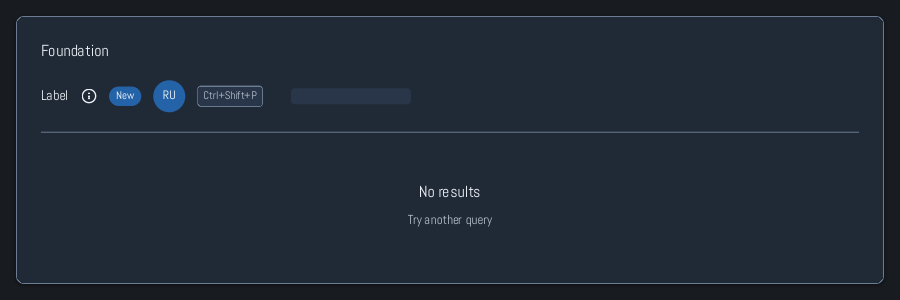

Browse documentation
Primitives
Use labels, icons, surfaces, and spacing to compose the structure of a screen.
Import
Load the optional component layer before using the examples below.
Ruby
require "zaniah/ui"Example
These building blocks are intentionally small. Place them inside Div layouts or higher-level components.
Rendered example

Ruby
Zaniah::UI::Card.new(
Zaniah::UI::Label.new("Profile", size: :lg),
Zaniah::UI::Avatar.new("Ruby UI"),
Zaniah::UI::Divider.new,
Zaniah::UI::Kbd.new("ctrl-shift-p")
)
Empty and loading states
Use EmptyState when there is no content to show; give the user a next action. Use Skeleton while content is loading.
Ruby
Zaniah::UI::EmptyState.new(
"No results", message: "Try another query"
)
Zaniah::UI::Skeleton.new(width: 180, height: 20)
API summary
Constructor options and behaviors are drawn from the component reference.
| Component | Constructor and methods | Variants or behavior |
|---|---|---|
Label | (text, tone:, size:, wrap:) | tone: default/muted/inverse; size: xs–xl |
Icon | (source, size:, color:, label:) | bundled: check/close/search/menu/info/warning |
Divider | (axis:) | horizontal/vertical |
Spacer | (size = nil) | fixed or flexible |
Card | (*children), child | theme surface |
Kbd | (keys, platform:); .for(action, keymap:) | OS shortcut notation, including multi-stroke bindings |
Avatar | (name, image:, size:) | initials or PNG |
Skeleton | (width:, height:) | pulsing loading placeholder |
EmptyState | (title, message:, icon:, action:) | compositional |
Accessibility
Give an Icon a label: when it conveys information; decorative icons do not need one.
| Component | Semantic role |
|---|---|
Label | text |
Icon | image when labeled |
Divider | separator |
Spacer | none |
Card | group |
Kbd | text |
Avatar | image |
Skeleton | progressbar/busy |
EmptyState | group |